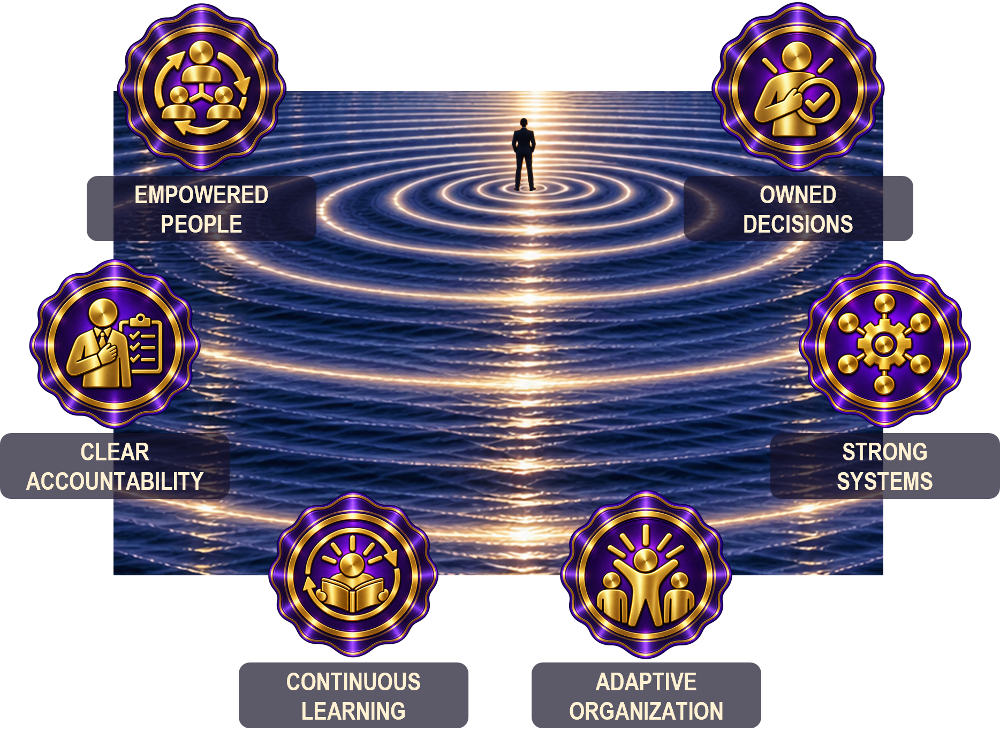

Solving Today Can Create Dependence Tomorrow
Capable leaders attract difficult decisions. Experience lets them recognize patterns, reconcile competing priorities, and act quickly when the answer is unclear. That capability creates real value—and can quietly teach the organization to depend on it.
Leadership Leverage distinguishes solving from building. Solving removes today’s problem. Building increases the organization’s ability to handle tomorrow’s version of it. Strong leadership requires both, but solving is immediate and visible while capability-building is slower and easier to postpone.
The objective is not maximum delegation or minimum leadership involvement. The question is what each intervention leaves behind: clearer information, stronger judgment, better boundaries, greater ownership, useful feedback, and capability that can travel beyond the leader.
Building Organizational Capability

The leader knows what to do. Should the leader do it?
Leadership decisions operate on two timescales: today’s result and tomorrow’s capability.
Leadership eventually ends. Capability does not have to.
The measure of leverage is not how many decisions reach the leader. It is how much sound judgment, ownership, accountability, learning, and capability remain throughout the organization.
What the Book Explores
A selective map of the ideas—not a substitute for the journey through the book.
The Shadow of Leadership
See how leaders shape attention, information, escalation, authority, and behavior even in decisions they never personally make.
Building Judgment in Others
Use questions, coaching, boundaries, selective restraint, and verification to develop decision-makers rather than answer-seekers.
Capability Through Others
Build trust, accountability, standards, productive disagreement, context, and increasing responsibility close to the work.
When Leadership Stops Learning
Examine conviction, bad news, failure, and the ways leadership behavior can make reality harder to hear.
Make Yourself Less Necessary
Measure progress by work that once required leadership intervention and now proceeds effectively without it.
Build What Outlives You
Transfer experience, principles, judgment, and capability so the organization can continue learning and performing beyond any one leader.
Put the ideas to work.
These are the kinds of questions the book is designed to make easier to ask—and harder to ignore.
- Am I solving the problem or building someone’s ability to solve the next one?
- What did my intervention teach people to do next time?
- Does authority match the boundaries and judgment required?
- Can bad news reach me without being softened on the way up?
- What required me a year ago that no longer requires me today?
- What will the organization be able to do because I was here?
Leadership Leverage
Executives, founders, senior leaders, managers, technical experts moving into leadership, and anyone whose effectiveness has made them a destination for too many decisions. The book is about multiplying capability without abandoning accountability or pretending every decision should be delegated.
Ideas Tested Against Real Decisions
A small sample of the organizations, events, and decisions examined throughout the book.
Use the ideas. Sample the book.
The Leadership Leverage Toolkit provides practical material for putting the book to work. The free preview includes the opening sequence through Chapter 1.